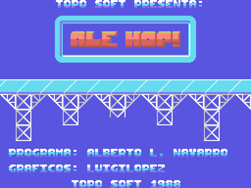

Dentro del bloque del juego hay cuatro trozos que desensamblan como código Z80 perfectamente coherente y a los que no llega ningún camino: ni un CALL, ni un JP, ni un puntero en ninguna tabla. Son 135 bytes de los 42645.
Se han buscado uno a uno: para cada dirección se ha rastreado su puntero (los dos bytes en little-endian) por todo el binario —las tres zonas de código, las tablas del motor y los 35 KB de datos de la página 0— y no aparece. Y el rastreo se hizo sobre el desensamblado real, no escaneando bytes: un escaneo ingenuo confunde operandos con opcodes y da falsos positivos.
Están marcados como datos en el listado a propósito. Que un trozo desensamble bien no prueba que se ejecute, y el reensamblado no lo caza: los bytes salen idénticos en los dos casos, solo cambia su interpretación.
El más interesante de los cuatro. Recorre los 0x1830 bytes de la tabla de color de la VRAM, y a cada byte le aplica dos veces la rutina de 0xC3A7:
0xC3A7: rlc a / rlc a / rlc a / rlc a ; intercambia los dos nibbles
ld d,a
and 0x0F ; mira el nibble bajo del resultado
xor 0x01 ; ¿vale 1?
ld a,d
ret nz ; si no, devuelve el valor rotado
and 0xF0 ; si sí, lo pone a 0
retAplicada dos veces, los nibbles vuelven a su sitio y el efecto neto es una regla de una línea: todo nibble que valga 1 pasa a 0. Probado sobre las 256 combinaciones posibles: cambian 31.
En el TMS9918 el color 1 es el negro y el 0 es transparente, y lo transparente deja ver el color de fondo del registro R7. O sea que esta rutina convierte de golpe todo el negro de la pantalla en "lo que diga el fondo".
Sobre la pantalla de presentación real cambia 3673 de los 6144 bytes de color, el 60% de la pantalla. Con el fondo negro que usa el juego (R7 = 0x01) no se notaría nada: solo cobra sentido acompañado de un cambio de R7. Es decir, era la mitad de un fundido o un fogonazo a pantalla completa.
Así se vería con el fondo en azul:

ld hl,0xC532 / ld a,(0xC52F) / add a,(hl) / ld (hl),a
call 0xC17A / push af / call 0xC134
ld bc,0x7C05 / call 0xC245 / pop af
ret z / halt / jr 0xC264Llama a tres rutinas que sí están vivas (0xC17A, 0xC134 y 0xC245) y toca una variable que sí se usa (0xC532), así que es código de este mismo juego, no de otro. Lo que lo delata es 0xC52F: esa variable no la lee ni la escribe una sola instrucción del código vivo. Es un bucle de animación del título que se sustituyó por otro y del que quedó la variable huérfana.
di / pop hl / call 0xB036 / pop ix / pop iy / pop af / pop bc / pop de / pop hl
ex af,af' / exx / pop af / pop bc / pop de / pop hl / ei / retEs la "interrupción rápida" clásica: descarta con pop hl la dirección de retorno al manejador del BIOS y desapila a mano los registros que el BIOS acababa de guardar, ahorrándose el resto de la rutina de interrupción.
Está justo delante del reproductor y llama a su rutina de frame (0xB036): es la entrada estándar de la librería de sonido, la que engancharías en el hook H.TIMI si solo quisieras música. Ale Hop! no la usa porque tiene manejadores propios —0xC105 en el título y 0xD345 en la partida— que hacen exactamente lo mismo y además llevan su contador de frames. Los tres son byte a byte el mismo esqueleto.
Es la mejor prueba de que el reproductor de sonido venía como librería reutilizable, no como código escrito para este juego: viaja con su manejador de interrupción incluido, aunque el juego que lo integra no lo llegue a usar.
Éste no está entre el código sino al final de los datos, justo detrás del último bloque de gráficos comprimidos.
in a,(0xA8) / and 0xC0 / ld c,a / ld b,3
[srl c / srl c / or c / djnz] ; replica el slot de la página 3 en las cuatro
ld (0xA87D),a
and 0xFC / di / out (0xA8),a ; página 0 -> ROM, páginas 1,2,3 -> RAM
ld hl,0x9000 / ld de,0x7000 / ld bc,0x184D / ldir
ld a,(0xA87D) / and 0xF0 / out (0xA8),a ; páginas 0 y 1 -> ROM, 2 y 3 -> RAM
ei / xor a / jp 0xC000Acaba saltando a 0xC000, que es el mismo punto de entrada que usa el juego de verdad. Pero el mapa de memoria que deja es otro: ROM en las páginas 0 y 1 (0x0000-0x7FFF) y RAM solo en las dos de arriba. La versión publicada deja ROM únicamente en la página 0 y RAM en las otras tres.
En esa versión, entonces, el juego vivía en los 32 KB de arriba y escondía sus datos debajo de la ROM del BASIC, en la página 1, en vez de debajo del BIOS como hace la publicada. Mueve 0x184D bytes (6221) a 0x7000, y la cuenta acaba justo en 0x884D — que es, curiosamente, la misma dirección donde terminan los gráficos comprimidos en la versión publicada.
Otro detalle que lo sitúa fuera: usa una variable en 0xA87D, y el bloque del juego termina en 0xA694. Esa dirección no existe en esta versión.
| dónde | bytes | qué es |
|---|---|---|
| 0x8850 | 45 | Cargador de una compilación con otro mapa de memoria |
| 0xC38E | 43 | Efecto de color a pantalla completa, nunca invocado |
| 0xC264 | 26 | Bucle de la pantalla de título sustituido por otro |
| 0xB000 | 21 | Manejador de interrupción de la librería de sonido, sin usar |
| 135 |